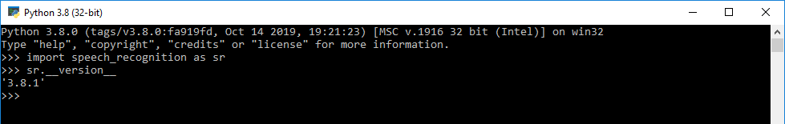
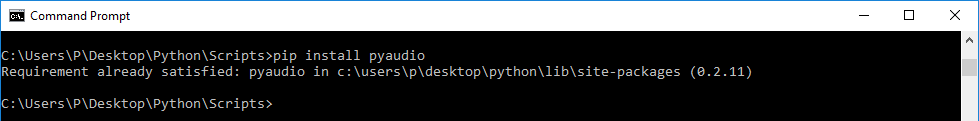
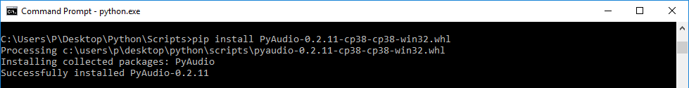

Python SpeechRecognition (Speech to Text)
What is Speech Recognition??
Speech recognition, the ability of devices to respond to spoken commands. Speech recognition enables hands-free control of various devices and equipment (a particular boon to many disabled persons), provides input to automatic translation,
and creates print-ready dictation.
In Simple words: Speech recognition system basically translates spoken language into text.
How Speech Recognition works??
Without all the Technical Details in simple words we can say:
The first component of speech recognition is, of course, speech. Speech must be converted from physical sound to an electrical signal with
a microphone, and then to digital data with an analog-to-digital converter. Once digitized, several models can be used to transcribe the audio to text.
Most modern speech recognition systems rely on what is known as a Hidden
Markov Model (HMM).
Python Speech Recognition Packages
- Google Speech Recognition
- CMU Sphinx (Works offline)
- wit
- watson-developer-cloud
- Google cloud speech
There is one package that stands out in terms of ease-of-use and we are gonna use this package: SpeechRecognition.
Installing the Required Packages
1. You can install SpeechRecognition from a terminal with pip:
pip install SpeechRecognition

OR You can download the package and extract it in the required folder --->> Download
Once installed, you should verify the installation by opening an interpreter session and typing:
>>> import speech_recognition as sr
>>> sr.__version__
'3.8.1'

2. Installing PyAudio using pip:
We need to install PyAudio library which used to receive audio input and output through the microphone and speaker. Basically, it helps to get our voice through the microphone.
pip install PyAudio

Since I have already installed it.It shows requirement satisfied..
If you have any errors trying to install using (pip) follow these simple steps below:
Find your python version,the easiest way to check either you have 64 or 32 Python just open it in the terminal:
- Find the appropriate .whl file from here, for example: mine is PyAudio-0.2.11-cp38-cp38-win32, and download
it.
- Go to the folder where you saved it after downloading for example:C:\Users\P\Desktop\Python\Scripts
- Install the .whl file with pip for example:
pip install PyAudio-0.2.11-cp38-cp38-win32.whl

Without using Microphone/Using an Audio File:
- Works without PyAudio
- Import Speech recognition library
import speech_recognition as sr
- Initializing recognizer class in order to recognize the speech. We are using google speech recognition.
r = sr.Recognizer()
- Audio file supports by speech recognition: wav, AIFF, AIFF-C, FLAC. I used ‘wav’ file in this example
with sr.AudioFile('male.wav') as source:
audio_text = r.listen(source)
try:
# using google speech recognition
print('Converting audio transcripts into text ...')
text = r.recognize_google(audio_text)
print(text)
except:
print('Sorry.. run again...')
I have used a random .wav from internet.You can also download .wav files from internet and try speech recognition on them You need to be aware that this is a very basic speech recognition program so
you can't expect everything to be correct....
- This was the result for the following male.wav file.
Final Program:
#import library
import speech_recognition as sr
# Initialize recognizer class (for recognizing the speech)
r = sr.Recognizer()
# Reading Audio file as source
# listening the audio file and store in audio_text variable
with sr.AudioFile('male.wav') as source:
audio_text = r.listen(source)
# recoginize_() method will throw a request error if the API is unreachable, hence using exception handling
try:
# using google speech recognition
print('Converting audio transcripts into text ...')
text = r.recognize_google(audio_text)
print(text)
except:
print('Sorry.. run again...')
Using Microphone for Speech Recognition
- Need to install PyAudio
- Instead of audio file source, we have to use the Microphone class. Remaining steps are the same.
Final Program:
#import library
import speech_recognition as sr
# Initialize recognizer class (for recognizing the speech)
def recog():
r = sr.Recognizer()
# Reading Microphone as source
# listening the speech and store in audio_text variable
with sr.Microphone() as source:
print("Talk")
audio_text = r.listen(source)
print("Time over, thanks")
# recoginize_() method will throw a request error if the API is unreachable, hence using exception handling
try:
# using google speech recognition
print("Converting audio transcripts into text ...")
print("Text: "+r.recognize_google(audio_text))
except:
print("Sorry, I did not get that")
while(True):
recog()
x=input("Would you like to try again?? Type(yes/no)")
if (x=='yes'):
continue
elif (x=='no'):
print("Hope you liked this program!!!")
break
else:
print("Invalid option")
break
Output:
To get more practical knowledge Click here.